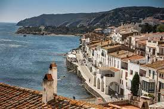
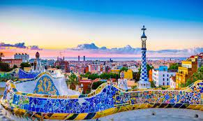
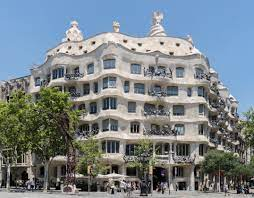

History of Girona
The history of this Catalan city goes back to the settlements of the Iberians of the indigetes tribe in the towns that surround and close the Llano de Girona. Around 77 BC Pompey built an oppidum on the Via Heráclea and the Roman occupants founded the original Girona, called Gerunda in Latin.
The Muslim conquest immediately affected Gerona, imposing the new Muslim power a personal and territorial tribute, but it did not last long due to its proximity to the Carolingian empire.
The Carolingian organization of the territory made the city the seat of the County of Girona. This city, as county seat, comfortably fulfilled its role and overcame the most difficult stages of the Muslim danger. The new walls reinforced the stronghold and enlarged the surface of the city.
During the 15th, 16th and 17th centuries the city continued to grow and small extensions and improvements were made to the walls to protect the city from the various attacks it had to face until the end of the 17th century and the beginning of the 18th century by part of the French troops in the context of numerous European wars.
Localitation
Tours
-
Historical city
Price: 15& person
You can visit the most magnificient monuments of the city while you learned about this magnificient town.
-
Jewish Call
Price: 15& person. Food not incluide.
Formed by a labyrinth of narrow streets and courtyards that maintain their medieval air, the Call Jueu de Girona is one of the best preserved Jewish quarters in Europe.
-
Costa Brava
Price: 17.5& person
In just a short time by bus we will arrive and we will be able to visit different towns of the Costa brava where we will be able to enjoy its beaches, views and gastronomy.
 -
Barcelona
Price: 20& person
Only 1 hour by bus we will enter the wonderful city of Barcelona where we can visit the Park Güell, La Pedrera and the Sagrada Familia among other impressive monuments of the city.
  -
Charming Villages
Price: 17.5& person
Apart from the beautiful coastal towns, Girona have many other towns that we can visit and enjoy the gastronomy such as Castellfollit de la Roca, Besalú or Banyoles with its beautiful lake among others.

Our Guides
Mariona Pujolras
Degree in Tourism.
Speaks english, french, catalan and spanish.
Anna Montreal
Degree in Tourism.
Speaks english, Germany, Italy, catalan and spanish.